Database schema
The schema below is not typed anywhere. It is read live from MySQL through DatabaseMetaData
by DatabaseExplorerDao, and it always matches whatever the real table looks like. Open Tools → Database
in the officer console to show this live instead of a screenshot.
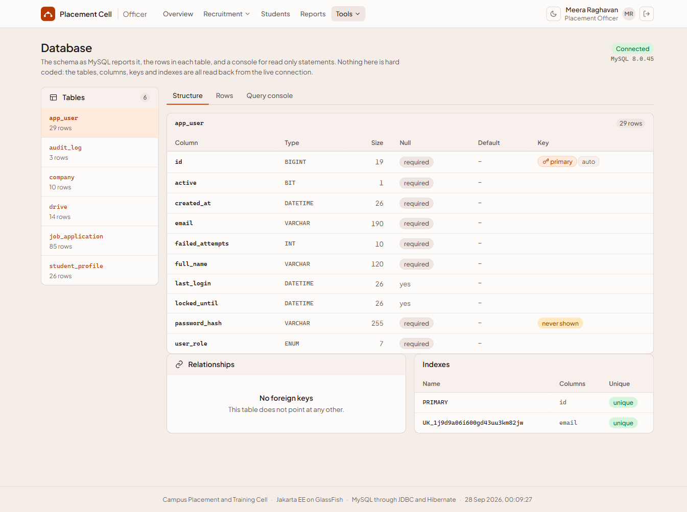
password_hash is marked never shown, columns and the badge are read from live MySQL metadata, not written by hand.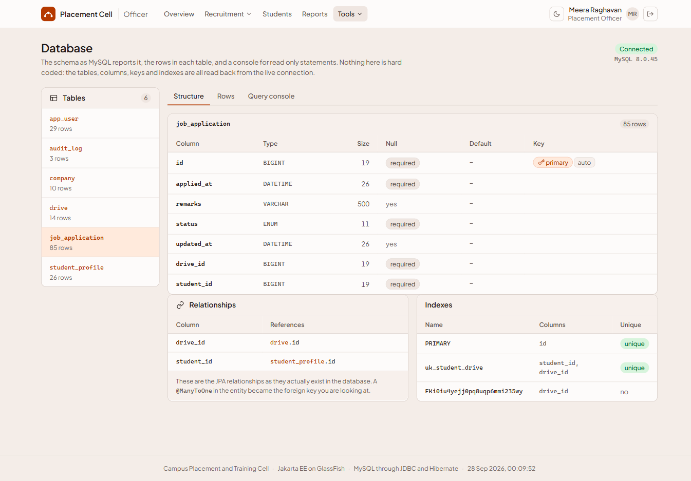
drive_id → drive.id, student_id → student_profile.id), Indexes shows uk_student_drive, the unique key that stops a double application.- Six tables total:
app_user,student_profile,company,drive,job_application,audit_log. A seventh,mock_score, appears once Yuvraj's Classroom JDBC page has been used. - Click through
student_profileanddrivetoo. Every foreign key on screen matches a@ManyToOnein the entity classes below, because Hibernate created them from those annotations.
@Entity @Table(name = "job_application", uniqueConstraints = @UniqueConstraint(name = "uk_student_drive", columnNames = {"student_id", "drive_id"})) // this is what makes the unique key you just saw on screen public class JobApplication implements Serializable { @Id @GeneratedValue(strategy = GenerationType.IDENTITY) private Long id; @ManyToOne(fetch = FetchType.EAGER, optional = false) @JoinColumn(name = "student_id", nullable = false) private StudentProfile student; // owns the student_id foreign key @ManyToOne(fetch = FetchType.EAGER, optional = false) @JoinColumn(name = "drive_id", nullable = false) private Drive drive; // owns the drive_id foreign key
<jdbc-connection-pool name="java:app/placementPool" datasource-classname="com.mysql.cj.jdbc.MysqlDataSource" steady-pool-size="4" max-pool-size="24" is-connection-validation-required="true" ping="true"> <property name="URL" value="jdbc:mysql://localhost:3306/placement_cell?..."/> <property name="user" value="placement_user"/> <property name="password" value="Placement@2026"/> </jdbc-connection-pool> <jdbc-resource pool-name="java:app/placementPool" jndi-name="java:app/jdbc/placementDS"/> <!-- Java code never sees a URL or password. It asks JNDI for "java:app/jdbc/placementDS". -->
| Schema browser | http://localhost:8080/placement/admin/database (officer, Tools → Database) |
| Same in MySQL | DESCRIBE job_application; SHOW CREATE TABLE job_application\G |
| Connection facts | http://localhost:8080/placement/admin/reports, the "live connection" card |
Karan: the app itself
Two kinds of user, and the flow from a request to a page. Show the login page and the student journey through eligibility to an application.
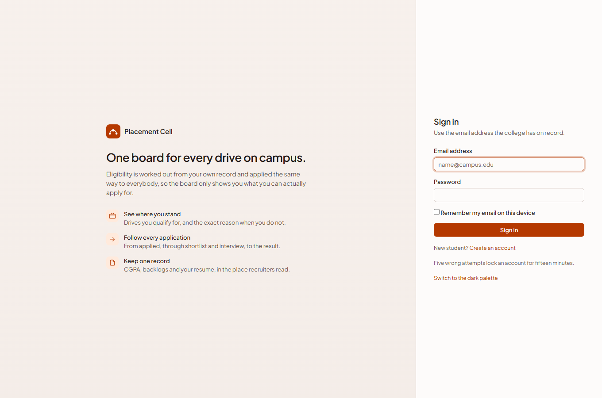
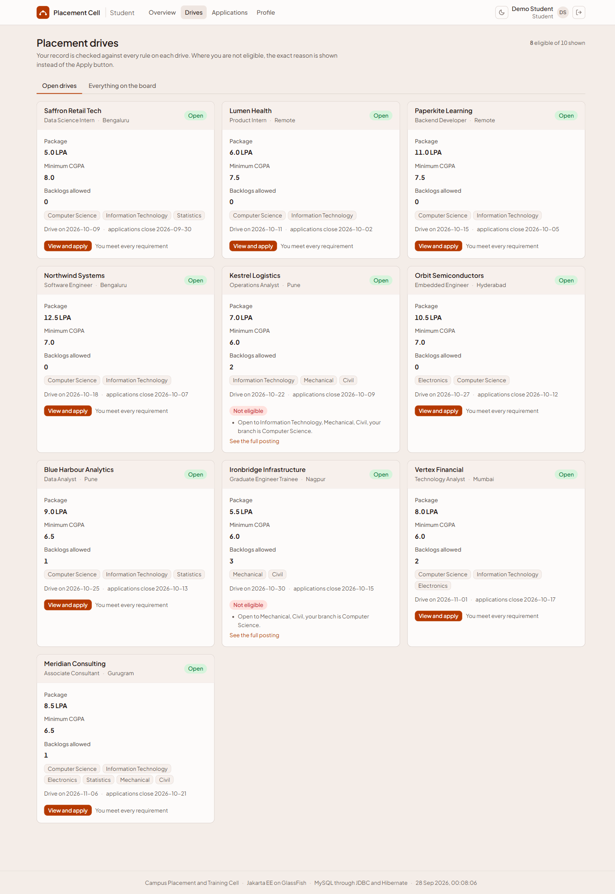
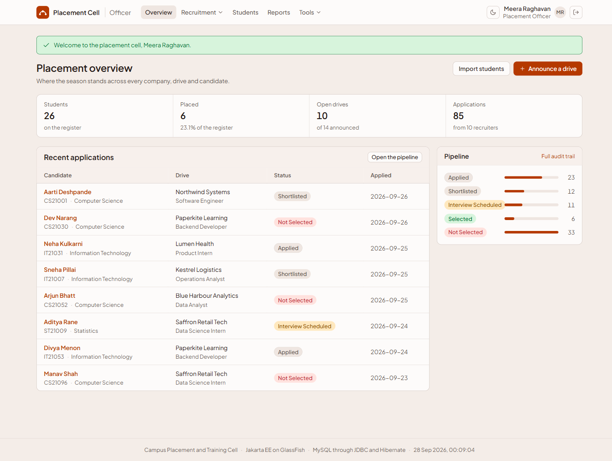
- The servlet asks the eligibility bean for a verdict on every drive, then hands the whole thing to a JSP. It decides nothing itself.
- Apply runs the same check again on the server, because the button being hidden is not what actually stops an ineligible application.
Eligibility verdict = driveService.check(profile, drive); if (verdict.isAlreadyApplied()) { Web.flashError(request, "You have already applied to " + drive.getCompany().getName() + "."); Web.redirect(request, response, "/app/applications"); return; } if (!verdict.isEligible()) { Web.flashError(request, "You are not eligible for this drive: " + verdict.getFirstReason()); Web.redirect(request, response, "/app/drive?id=" + drive.getId()); return; } // only past here does applicationService.apply() ever run
| App | http://localhost:8080/placement/ |
| Officer | tpo@campus.edu / Campus@2026 |
| Seeded student | aarti.deshpande@campus.edu / Campus@2026 |
Tiya: accounts and security
Fake email rejected, then a real signup ending on the welcome panel. This is the account the whole presentation continues with afterward.
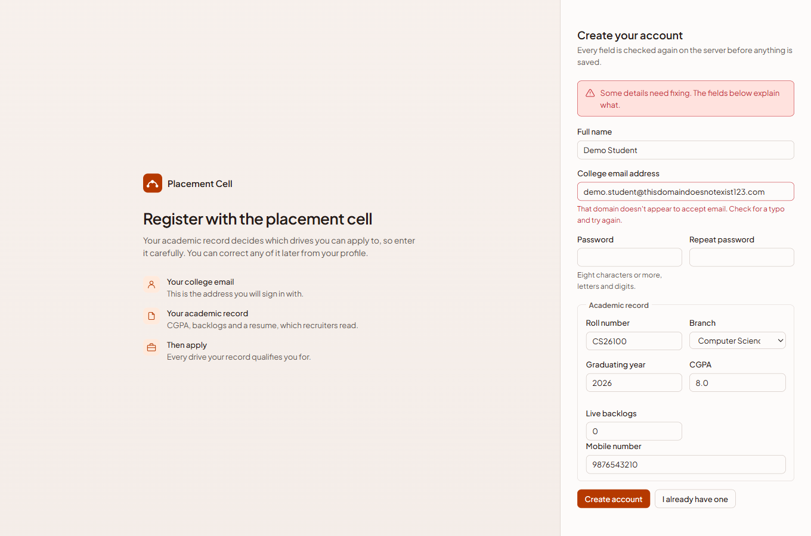
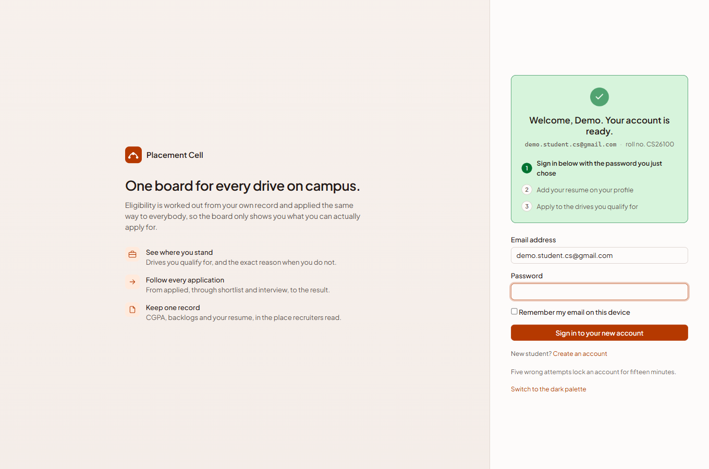
- The officer check used to test the raw request text. A doubled slash,
//admin/database, reached the officer page as a student, because the container routes on a cleaned path that the raw text did not match. - Now the same cleaned path is what the rule tests. Five tests pin it down.
public static String canonical(String requestUri, String contextPath) { String path = requestUri.substring(contextPath.length()); int parameters = path.indexOf(';'); if (parameters >= 0) { path = path.substring(0, parameters); } return path.replaceAll("/{2,}", "/"); // collapses // to / } public static boolean isAdminPath(String path) { return path.equals("/admin") || path.startsWith("/admin/"); }
public static String hash(String rawPassword) { byte[] salt = new byte[16]; RANDOM.nextBytes(salt); // fresh salt, every account byte[] digest = pbkdf2(rawPassword.toCharArray(), salt, 120_000); // PBKDF2, 120,000 rounds return "pbkdf2$" + 120_000 + "$" + encode(salt) + "$" + encode(digest); } // stored as: pbkdf2$120000$<salt>$<hash> -- the password itself is never in this string
| Fake domain | demo.student@thisdomaindoesnotexist123.com |
| Real signup | demo.student.cs@gmail.com / Demo@2026x / roll CS26100 |
| Full list | 08-cheat-sheet-pastables.html |
Kinjal: views and validation
The getting-started checklist a new student lands on, and the same drives board Karan uses, seen from the angle of who wrote the page.
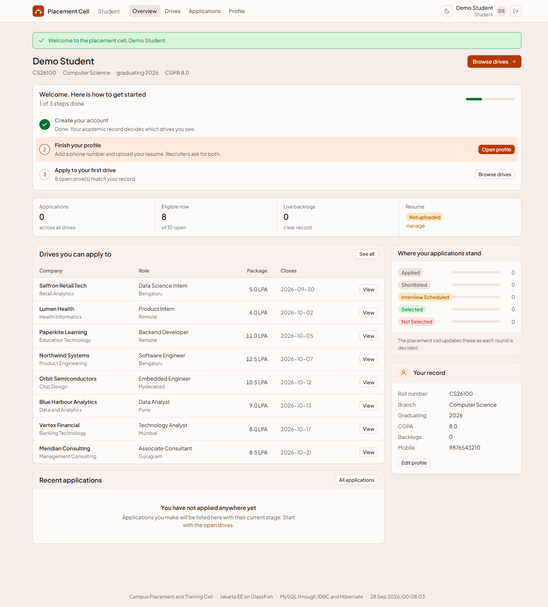
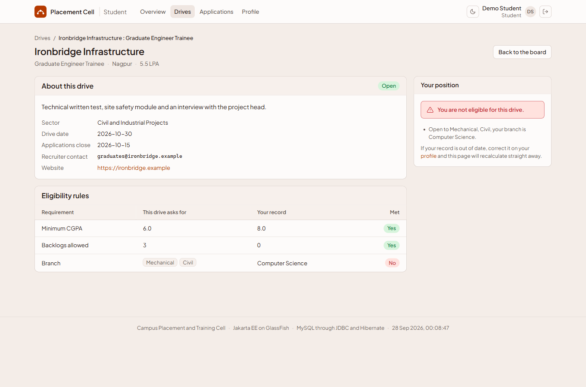
- Every value on this page came from the database and is printed with
c:out, which escapes it, so nothing a user typed can become markup or a script. - Scriptlets are switched off in
web.xml: a page with Java in it would not even compile.
/* Deliberately stricter than the RFC: no leading, trailing or doubled dot, a proper domain, a final label of at least two letters. */ private static final Pattern EMAIL = Pattern.compile( "^(?=.{1,64}@)[A-Za-z0-9]+(?:[._%+-][A-Za-z0-9]+)*" + "@(?:[A-Za-z0-9](?:[A-Za-z0-9-]{0,61}[A-Za-z0-9])?\\.)+" + "[A-Za-z]{2,24}$"); // admin@campus fails this. It is the HTML attributes' job to hint, this class's job to decide.
| Direct JSP (refused) | http://localhost:8080/placement/WEB-INF/views/drives.jsp |
| Escaping proof | register with name "><b>hi</b>, view page source |
Chandra: entities and EJB
The pipeline where an officer moves an application, and the audit trail two rows appear on right after: one for the write, one from the message driven bean.
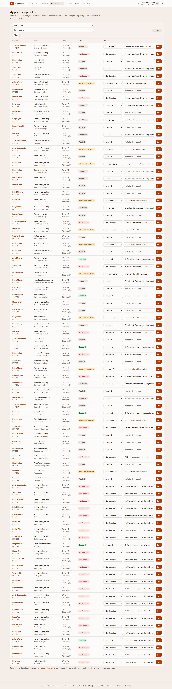
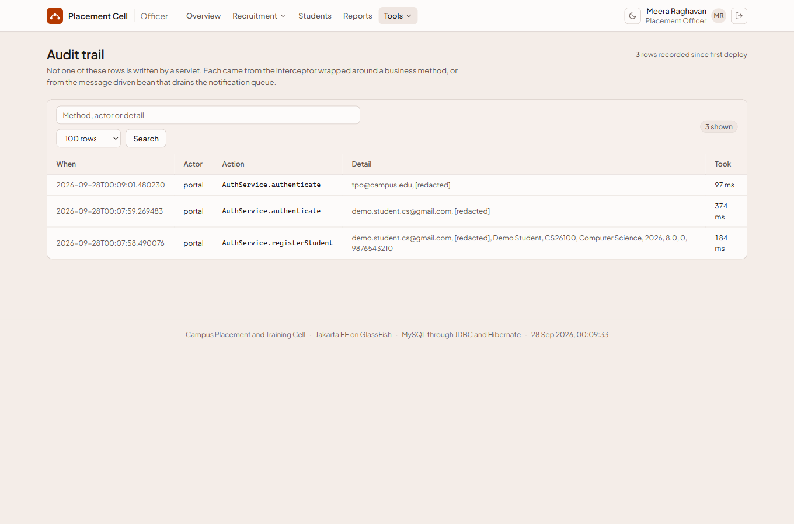
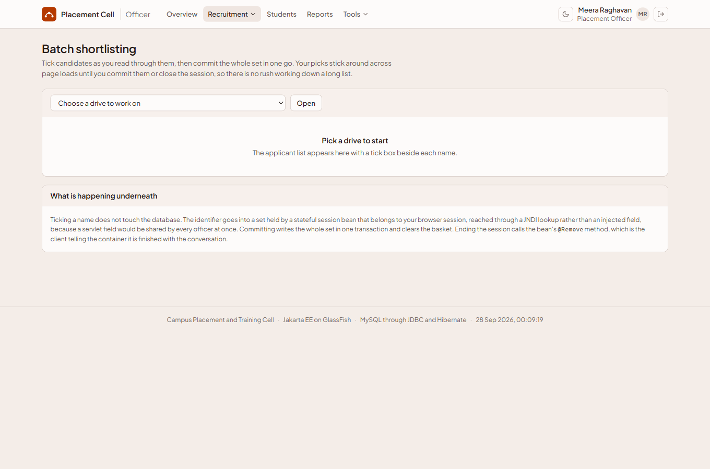
- This row is not written by the servlet. An interceptor wraps the business method and writes it, so the beans hold no audit code at all.
[redacted]next to a password parameter, and any entity prints asType#id, never a Java object address.
if (drive.getStatus() != DriveStatus.OPEN) result.reject("This drive has been closed by the placement cell."); if (drive.getLastDate().isBefore(today)) result.reject("The last date to apply was " + drive.getLastDate() + "."); if (student.getCgpa() < drive.getMinCgpa()) result.reject(String.format("Requires a CGPA of %.2f, your record shows %.2f.", ...)); if (student.getBacklogs() > drive.getMaxBacklogs()) result.reject("Allows at most " + drive.getMaxBacklogs() + " backlog(s), ..."); // every rule runs, every failing one adds a reason. Nothing stops at the first failure.
| Move a status | http://localhost:8080/placement/admin/applications |
| See the two audit rows | http://localhost:8080/placement/admin/audit |
| Proof in the log | server\glassfish7\glassfish\domains\domain1\logs\server.log, search "Notification delivered" |
Yuvraj: MySQL and JDBC
The live connection card, and the Classroom JDBC page where the two coding styles run side by side against the same table.
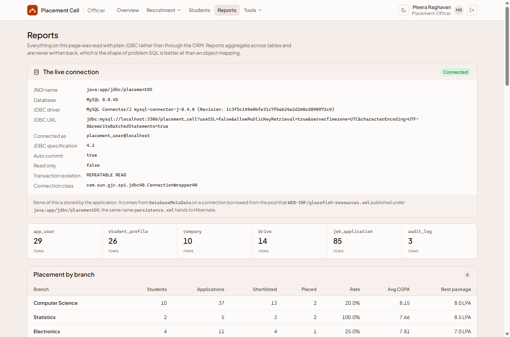
DatabaseMetaData on a pooled connection.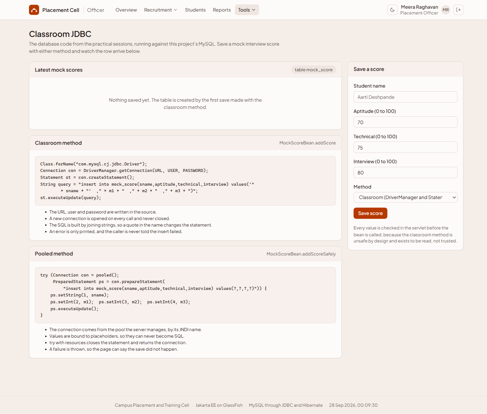
DriverManager, Statement) beside the pooled, bound version, both writing to the same table live.- Five steps in order: datasource, connection, prepared statement, result set, close. Closing hands the connection back to the pool, it does not end a TCP connection.
- The connection class is a GlassFish wrapper, not MySQL's own driver class, which is the proof it came from the pool.
try (Connection connection = dataSource().getConnection(); PreparedStatement statement = connection.prepareStatement(BRANCH_SQL); ResultSet rs = statement.executeQuery()) { while (rs.next()) { BranchReport row = new BranchReport(); row.setBranch(rs.getString("branch")); row.setStudents(rs.getInt("students")); rows.add(row); } } // try with resources: closes result set, statement, then connection -- back to the pool
| Reports | http://localhost:8080/placement/admin/reports |
| Database | http://localhost:8080/placement/admin/database |
| Classroom JDBC | http://localhost:8080/placement/admin/classroom-jdbc, break it with O'Brien |